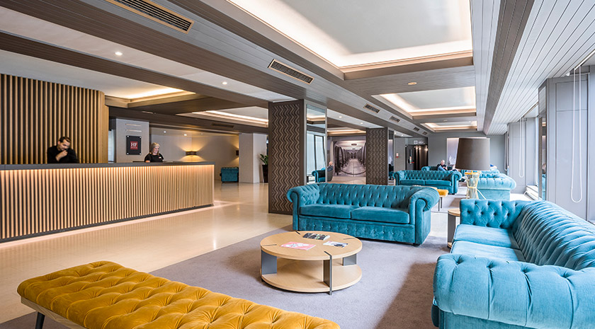
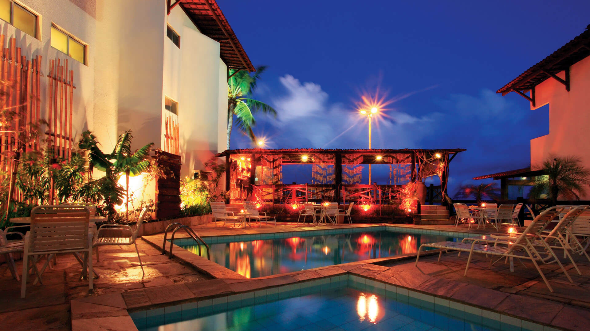
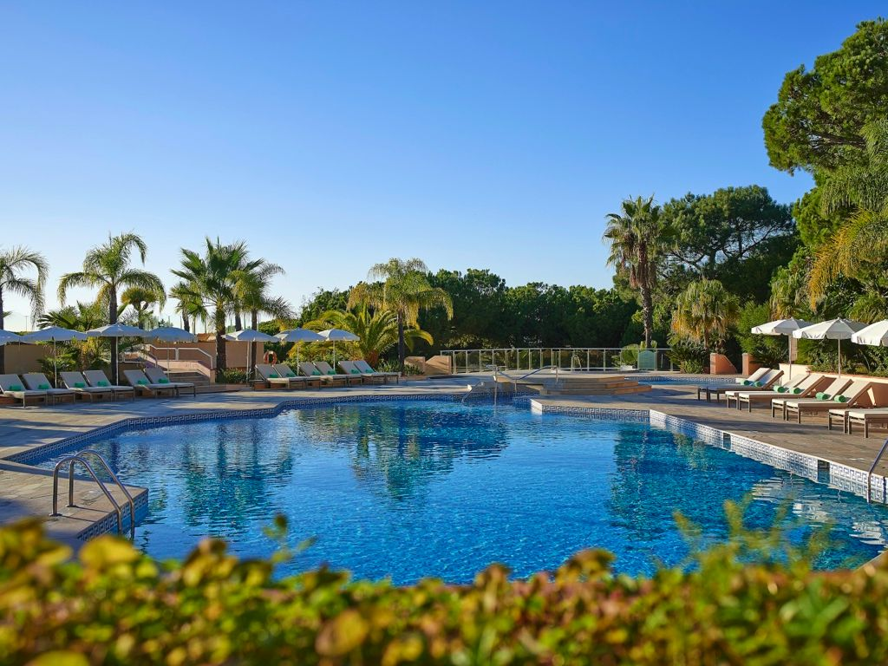
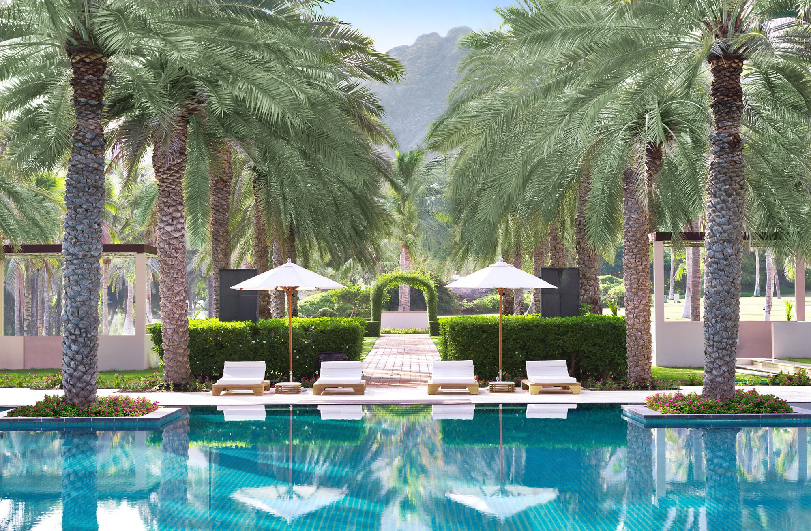
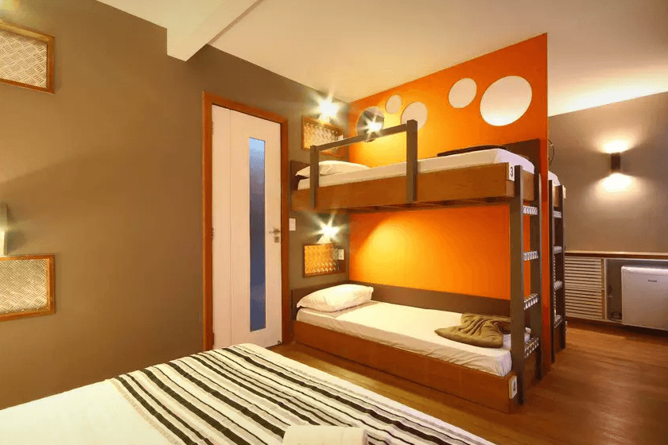
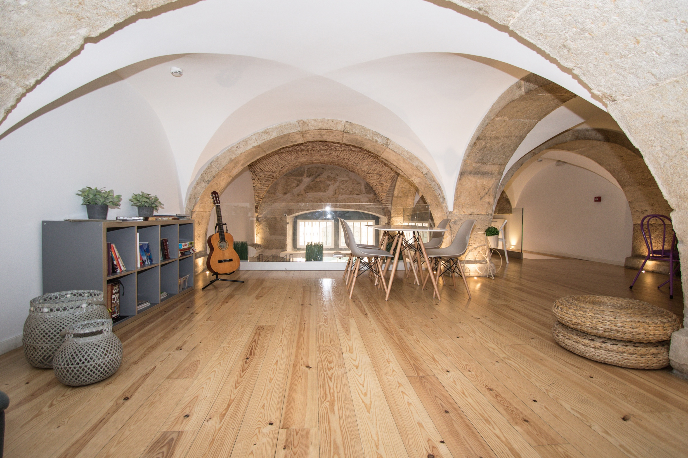
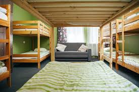

Welcome to Maiden Hotels & Resorts

The Trooper Hotel
Able to satisfy the different needs of its guests with comfort and first rate services. It is only 2 km from the airport and from highway exits. The hotel has a large parking area , a real luxury in a city like Nice.
At The Trooper you will be welcomed amongst olive trees, citron trees and magnolias, in gardens that hide exotic plants and in a wonderful outdoor pool with deck chairs; protected against the sun’s rays by big umbrellas you can enjoy a drink amongst the wisteria bushes, and find peace and tranquillity enjoying Costa Azzurra’s mild climate.

Aces High Hotel
Able to satisfy the different needs of its guests with comfort and first rate services. It is only 2 km from the airport and from highway exits. The hotel has a large parking area , a real luxury in a city like Nice.
At Aces High you will be welcomed amongst olive trees, citron trees and magnolias, in gardens that hide exotic plants and in a wonderful outdoor pool with deck chairs; protected against the sun’s rays by big umbrellas you can enjoy a drink amongst the wisteria bushes, and find peace and tranquillity enjoying Costa Azzurra’s mild climate.

Powerslave Hotel
Able to satisfy the different needs of its guests with comfort and first rate services. It is only 2 km from the airport and from highway exits. The hotel has a large parking area , a real luxury in a city like Nice.
At Powerslave you will be welcomed amongst olive trees, citron trees and magnolias, in gardens that hide exotic plants and in a wonderful outdoor pool with deck chairs; protected against the sun’s rays by big umbrellas you can enjoy a drink amongst the wisteria bushes, and find peace and tranquillity enjoying Costa Azzurra’s mild climate.

Run To The Hills Resort
Able to satisfy the different needs of its guests with comfort and first rate services. It is only 2 km from the airport and from highway exits. The hotel has a large parking area , a real luxury in a city like Nice.
At Run To The Hills Resort you will be welcomed amongst olive trees, citron trees and magnolias, in gardens that hide exotic plants and in a wonderful outdoor pool with deck chairs; protected against the sun’s rays by big umbrellas you can enjoy a drink amongst the wisteria bushes, and find peace and tranquillity enjoying Costa Azzurra’s mild climate.

The Number Of The Beast Resort
Able to satisfy the different needs of its guests with comfort and first rate services. It is only 2 km from the airport and from highway exits. The hotel has a large parking area , a real luxury in a city like Nice.
At The Number Of The Beast Resort you will be welcomed amongst olive trees, citron trees and magnolias, in gardens that hide exotic plants and in a wonderful outdoor pool with deck chairs; protected against the sun’s rays by big umbrellas you can enjoy a drink amongst the wisteria bushes, and find peace and tranquillity enjoying Costa Azzurra’s mild climate.

The Piece of Mind Resort
Able to satisfy the different needs of its guests with comfort and first rate services. It is only 2 km from the airport and from highway exits. The hotel has a large parking area , a real luxury in a city like Nice.
At The Piece of Mind Resort you will be welcomed amongst olive trees, citron trees and magnolias, in gardens that hide exotic plants and in a wonderful outdoor pool with deck chairs; protected against the sun’s rays by big umbrellas you can enjoy a drink amongst the wisteria bushes, and find peace and tranquillity enjoying Costa Azzurra’s mild climate.
Have you seen our brand new hostels?

Fear of the Dark Hostel
Able to satisfy the different needs of its guests with comfort and first rate services. It is only 2 km from the airport and from highway exits. The hotel has a large parking area , a real luxury in a city like Nice.
At Fear of the Dark Hostel you will be welcomed amongst olive trees, citron trees and magnolias, in gardens that hide exotic plants and in a wonderful outdoor pool with deck chairs; protected against the sun’s rays by big umbrellas you can enjoy a drink amongst the wisteria bushes, and find peace and tranquillity enjoying Costa Azzurra’s mild climate.

Live After Death Hostel
Able to satisfy the different needs of its guests with comfort and first rate services. It is only 2 km from the airport and from highway exits. The hotel has a large parking area , a real luxury in a city like Nice.
At Live After Death Hostel you will be welcomed amongst olive trees, citron trees and magnolias, in gardens that hide exotic plants and in a wonderful outdoor pool with deck chairs; protected against the sun’s rays by big umbrellas you can enjoy a drink amongst the wisteria bushes, and find peace and tranquillity enjoying Costa Azzurra’s mild climate.

Killers Hostel
Able to satisfy the different needs of its guests with comfort and first rate services. It is only 2 km from the airport and from highway exits. The hotel has a large parking area , a real luxury in a city like Nice.
At Killers Hostel you will be welcomed amongst olive trees, citron trees and magnolias, in gardens that hide exotic plants and in a wonderful outdoor pool with deck chairs; protected against the sun’s rays by big umbrellas you can enjoy a drink amongst the wisteria bushes, and find peace and tranquillity enjoying Costa Azzurra’s mild climate.